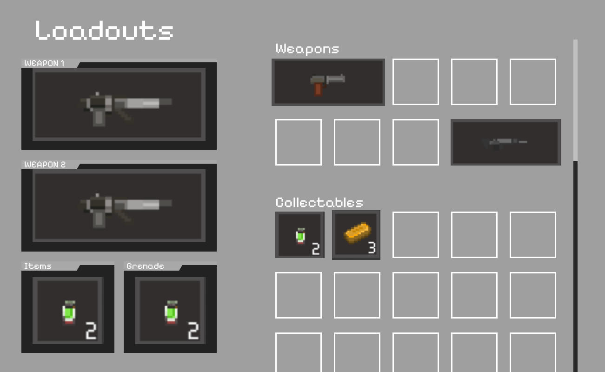
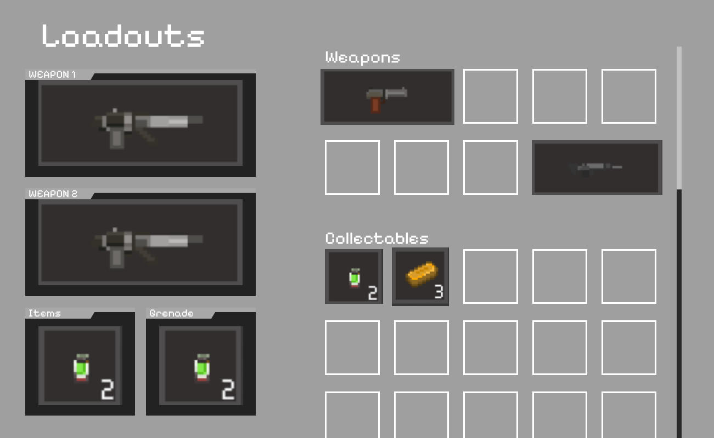

Overview
Overdawn is a unique 2.5D game, fast-paced, bullet-time, bullet-hell shooter featuring thrilling gunplay and precise headshots. Playing as the chosen ones, you must break back into the past, to the doom-impending state of Andrean, where your actions may alter the course of the universe. Awards - GDWC 2025 Finalists for Best Student Game & SAGE Runner Up in Design.
Level Design
- Created Mock-up and Block-out on engine for 30 levels.
Combat Design
- Created comprehensive weapon and skill balance sheets for all characters and NPCs.
- Revised the main character’s core mechanic to improve player experience and clarity.
- Designed and authored a combat design document for boss encounters.
Character Design
- Authored character design documents for 6 unique NPC enemies, detailing abilities, behaviors, and combat roles.
- Developed character design documents for 2 bosses, focusing on mechanics, narrative integration, and progression balance.
- Collaborated closely with the narrative team to align character backstories, motivations, and worldbuilding with gameplay design.
System Design
- Designed a comprehensive skill tree system, including structure, active skills, and passive skills, while collaborating closely with the narrative and art teams to ensure thematic and visual cohesion.
- Developed the level progression system, balancing XP curves, difficulty pacing, and reward structures to sustain long-term player engagement.
- Created the quest system, outlining quest lists for each chapter, defining objectives, and integrating them with both narrative beats and gameplay progression.
Lead Usability
- Produced weekly Windows and Mac builds while leading a team of 5 usability and QA staff members.
- Oversaw team progress, reviewed playtest notes, and synthesized findings into actionable feedback.
- Collaborated closely with engineers to identify, report, and resolve bugs, ensuring smoother player experience.
UI and UX
 


- Designed Main Menu, weapon wheel, and loadouts.
Links
Steam
Trailer